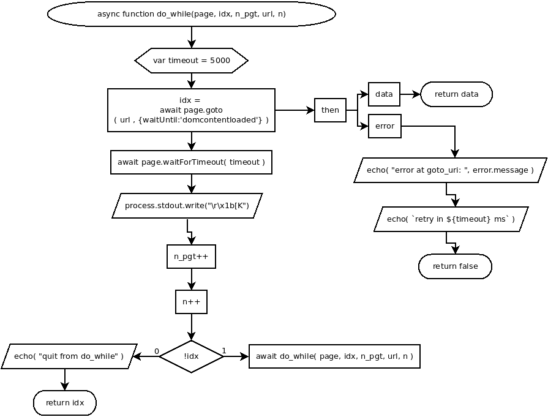

async function do_while(page, idx, n_pgt, url, n)
Flowchart

Code
async do_while(page, idx, n_pgt, url, n){
var timeout = 5000;
idx = await page.goto( url , {waitUntil:'domcontentloaded'} )
.then(
async ( data )=>{ return data; },
async ( error )=>{
echo( "error at goto_uri: ", error.message );
echo( `retry in ${timeout} ms` );
return false;
}
);
await page.waitForTimeout( timeout );
process.stdout.write("\r\x1b[K");
n_pgt++;
n++;
if( !idx ){
await do_while( page, idx, n_pgt, url, n );
} else {
echo( "quit from do_while" );
return idx;
}
}